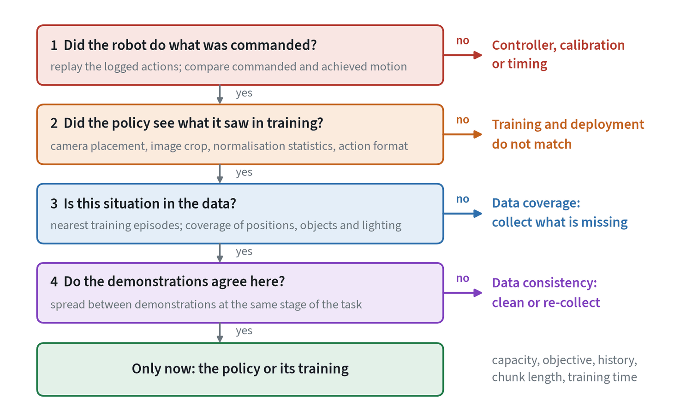
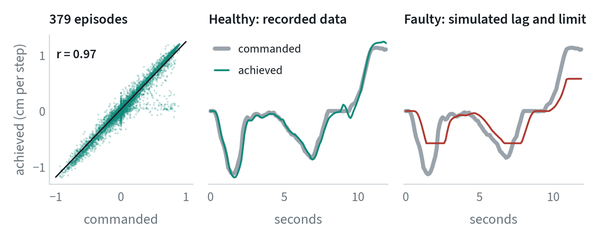
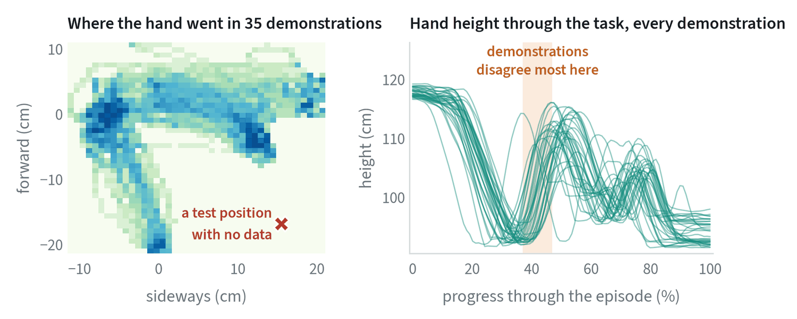
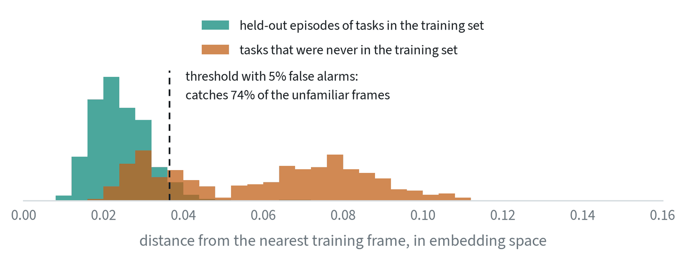

Find the layer before fixing anything
When a robot fails, the instinct is to retrain the policy. That is the slowest fix and often the wrong one. A learned policy sits on a stack: a controller underneath, a data pipeline feeding it, and a dataset behind it. A fault in any layer looks, from the outside, like a bad policy.


Work down the list and stop at the first “no”. The order is by cost. The first two questions take minutes and need no training run. The last one can take days.
1. Did the robot do what was commanded?
Take the controller out of the question first. Log the actions the policy sent and the motion the robot actually made, and compare them.


A healthy system looks like the middle panel. Three patterns point at the controller or the hardware and not at the policy: the achieved motion lags the command, it is clipped at a limit the policy does not know about, or it is offset by a constant, which suggests calibration.
The decisive test is replay. Take a recorded demonstration and send its actions to the robot with no policy involved. If the replay fails, no policy trained on that data can succeed, and the problem is below the policy.
2. Did the policy see what it saw in training?
The second layer is everything between the sensors and the network. These faults are silent, and each has been met before in this guide.
| Check | How to check it |
|---|---|
| Camera placement and order | Overlay a live frame on a training frame. Confirm that the wrist and scene cameras are not swapped. |
| Image processing | Same crop, resize, colour order and compression as in training. |
| Normalisation statistics | The checkpoint’s statistics are the ones applied, in both directions. |
| Action convention | Same frame, same units, absolute or relative, same gripper sign. |
| Timing | Same control rate; images and body state no staler than in training. |
A useful shortcut is to feed the policy a training episode’s observations, offline, through the deployment code path. Its outputs should match the recorded actions about as well as they did in training. If they do not, the pipeline differs.
3 and 4. Is it in the data, and does the data agree?
If the robot executes commands faithfully and the inputs match, look at the dataset before the model.


- Coverage. Was the failing situation ever demonstrated? Find the nearest training episodes to the failure, by object position or by image embedding. If the nearest ones are far away, the policy was never shown what to do, and the fix is to collect that case.
- Consistency. Where the data does cover the situation, do the demonstrations agree? In the right-hand panel they differ by several centimetres at one stage. Wide spread where a precise motion is needed means the policy is being taught several answers. The fix is to clean or re-collect, not to train longer.
These two have opposite cures, which is why they are separate questions. More data fixes a coverage gap and can make a consistency problem worse.
Is this situation in the data? A measured check
Question 3 can be answered with a number. Embed the frames of the failing episode with a pretrained image encoder, and for each one find the distance to the nearest frame in the training set. Frames from familiar situations sit close to the data. Frames from unfamiliar ones do not.


Distance to the nearest training frame separates the two groups with an area under the curve of 0.93. A threshold that raises a false alarm on 5% of familiar frames catches 74% of the unfamiliar ones. The quarter that it misses are frames from new tasks that happen to look like old ones, typically the start of an episode before anything distinctive has happened.
In triage this gives a quick, objective answer. If the failing episode’s frames are far from the training set, the problem is coverage and the remedy is data. If they are as close as any held-out episode, coverage is not the problem and the next question applies. The same score, computed live, is a run-time monitor, as the note on understanding and safety describes.
It has two blind spots. It measures similarity of appearance as one particular encoder sees it, so a change the encoder ignores, such as a small shift in an object’s position, goes undetected. And it says nothing about whether the training data near that point was any good.
5. Only then, the policy
If all four answers are yes, the fault is in the model or its training: too little capacity, an objective that averages over valid choices, too much or too little history, a chunk that is too long to react, or a run that had not converged. Change one of these at a time and compare against the unchanged run on the same test positions.
Habits that make triage possible
- Log everything, every episode. Images, body state, commanded and achieved actions, timestamps, and the release that was running. A failure that was not recorded cannot be diagnosed.
- Keep a failure taxonomy. Label each failure with a stage and a cause, and count. The largest group is the next piece of work.
- Reproduce before fixing. Find the starting conditions that fail repeatedly. A fix cannot be verified against a failure that happened once.
- Change one thing. Then re-run the same failing cases.
Common mistakes
- Retraining first. It is the most expensive test and it changes several things at once.
- Collecting more data for a consistency problem. More conflicting demonstrations do not resolve a conflict.
- Diagnosing from the success rate. The number says that something failed. Only the logs say what.
Terms
- Replay
- Sending a recorded episode’s actions to the robot with no policy in the loop.
- Coverage
- Whether the training data includes situations like the one being tested.
- Consistency
- Whether demonstrations of the same situation agree with each other.
- Failure taxonomy
- A fixed list of failure stages and causes used to label and count failures.
- Nearest-neighbour distance
- The distance from a sample to the closest example in a reference set; a simple measure of familiarity.